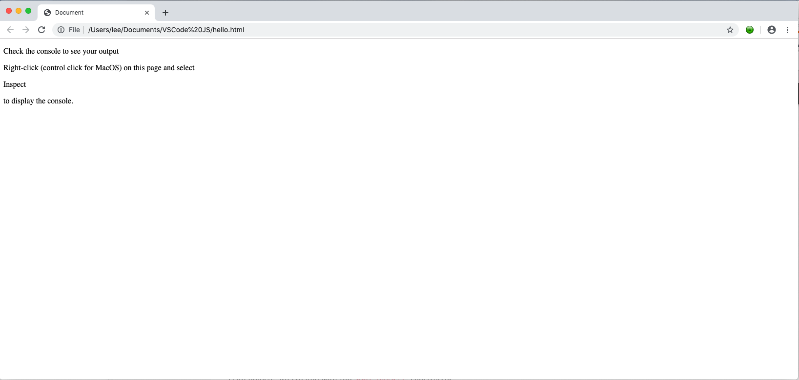
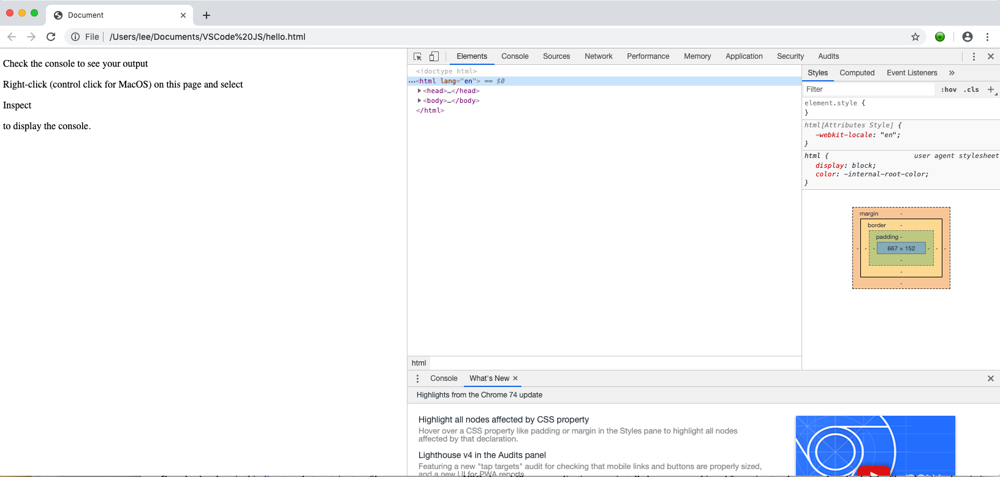
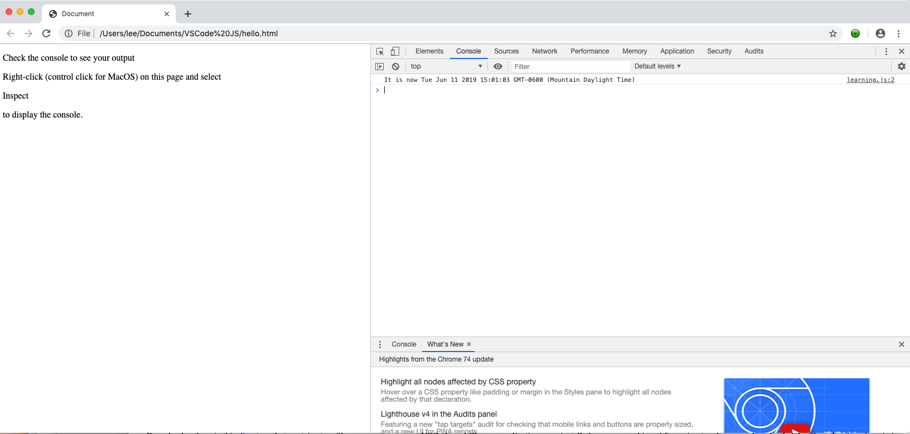

This work is licensed under a Creative Commons Attribution 4.0 International License.
Installation and Purpose
Before and during the early 1990's, a new technology was on the rise. Servers were popping up supplying documents consumed by a new type of computer application... the 'Web Browser.' The documents were written in a new language called Hyper-Text Markup Language (HTML) and the protocol used to transfer the data in the document to the web browser was called http. This combination of server, document type, and protocol was revolutionary,but there was a problem. No matter how nice you made the HTML 'pages', they were static. They were useful for displaying information like the contents of books and advertising, but not usable for much more. A way was needed to make the pages dynamic.
In 1995, Netscape Communications, the first company to produce a marketed web browser, created the forerunner to what most people know today as JavaScript to help solve this problem. They initially called it Mocha. Today, if you are creating a website, you use JavaScript, the name most people use instead of the languages' acutal name, ECMA Script. It is now common to write both the server code producing the HMTL for the web browser as well as code that lets the web browser be active in JavaScript.
Take a look at Figure 1. It shows the ancestery of both JavaScript and Python. Since C is an ancestor of both languages you can expect to see some things in Javacript that remind you of what you learned about coding in Python. C is not Python's only ancester. A very strong contributor to Python is the Modula language. Because of this ancestry, modules exist in Python but not in JavaScript. Modulo's ranges are an important part of Python. Other language users see that power and want it too. Because of this, you can find JavaScript libraries to use in your apps that add in Modules, ranges, and other types of behaviors.
The Integrated Development Environment (IDE) selected for this course is Visual Studio Code. Go to the site for Visual Studio Code download the installer for your operating system. When you start the download you will be taken to a page that will help you get started. This video will help you install and get started. Since you will be working in JavaScript, this page of hints may be of help to you. It's OK if you don't understand everything about VSCode right off the bat. You'll gradually learn as you run into a need.
The web browser you'll be using in the class is Google Chrome. If you don't have it installed, go to the download page for Chrome and install it.Download and unzip this directory that contains two files you can use to test VSCode and Chrome applications you installed on your machine. After going to where you downloaded the file, select it and unzip it.
After the folder is unzipped, right or control click the index.html file in the first_js_load directory and select 'Open with' and Chrome. You will see this in the browser.
Follow the directions on the screen. You should now see this.
What you see on the right-hand side are called the developer tools. The tool we are most interested in, for now, is the console. Click the word 'Console' at the top of the developer tools and you should see this which includes the current date and time.

When you reach this point, you know your browser is setup correctly and you now know how you will use the browser's console to see the results of computing using JavaScript.
The work you do using these two tools will flow like this
This work is licensed under a Creative Commons Attribution 4.0 International License.